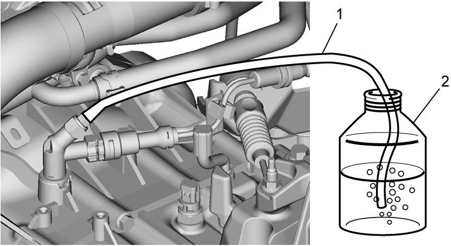
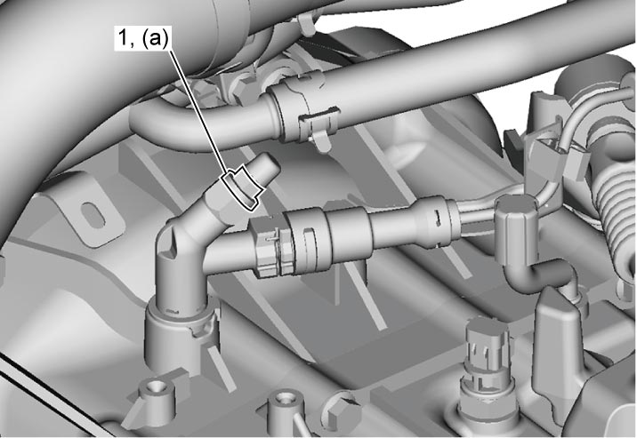

5C
| Air Bleeding of Clutch System |
NOTICE:
•Brake fluid is extremely damaging to painted surfaces.
If brake fluid contacts a painted surface, immediately wipe it off and flush the surface thoroughly with water.
•If the clutch pedal is pumped continuously to bleed the clutch system, the oil seal of the operating cylinder may be damaged, resulting in fluid leakage.
After releasing the clutch pedal, wait at least 1 second before depressing it again.
If brake fluid contacts a painted surface, immediately wipe it off and flush the surface thoroughly with water.
•If the clutch pedal is pumped continuously to bleed the clutch system, the oil seal of the operating cylinder may be damaged, resulting in fluid leakage.
After releasing the clutch pedal, wait at least 1 second before depressing it again.
Bleeding operation is necessary to remove air whenever it entered hydraulic clutch system.
1)Fill master cylinder reservoir with brake fluid and keep the reservoir at least one-half full of fluid during bleeding operation.
Clutch fluid specification
:
Refer to reservoir cap
2)Remove bleeder plug cap. Attach a vinyl tube (1) to bleeder plug, and insert the other end into container (2).
3)Depress clutch pedal several times, and then while holding it depressed, loosen bleeder plug about one-third to one-half a turn.
4)When fluid pressure in cylinder is completely released, retighten bleeder plug.
5)Repeat this operation until there are no more air bubbles in hydraulic line.


 "Expand image")
6)When air bubbles disappear from fluid flowing into container, depress and hold clutch pedal, and tighten bleeder plug (1).

 "Expand image")
7)Attach bleeder plug cap.
8)After completing bleeding operation, apply fluid pressure to brake lines and check for leakage.
9)Replenish master cylinder reservoir with fluid up to specified level.
10)Check clutch pedal for operation. If spongy condition is felt, repeat entire procedure of bleeding.